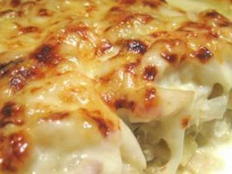

Bacalhau com natas

Descrição
O bacalhau com natas é uma forma popular de cozinhar o bacalhau salgado em Portugal. Este prato consite num assado no forno de bacalhau em camadas com cebola, batata frita em cubos (ou restos de batata já cozinhada) e natas, geralmente temperada com noz-moscada e pimenta branca.
Ingredientes:
- 4 postas de bacalhau demolhado
- 6dl de leite
- 1 cebola
- 2 colheres (sopa) farinha
- 1kg batata
- 2dl de natas
- queijo ralado
- 1 pitada de noz-moscada
- Azeite Q.B.
- Sal e pimenta Q.B.
Instruções de preparação
- Coza as postas de bacalhau em leite.
- Corte a cebola em rodelas finas e refogue em azeite até estar mole e transparente.
- Escorra o bacalhau e desfaça-o em lascas e junte à cebolada. Deixe refogar lentamente. Polvilhe com farinha, mexa e regue com leite coado, onde cozeu antes o bacalhau. Deixe engrossar, mexendo de vez em quando.
- Descasque e corte as batatas em cubos e frite em óleo não quente, de forma a deixá-las mais cozidas que fritas. Escorra as batatas e junte-as ao bacalhau. Tempere com sal, pimenta e noz-moscada.
- Deite tudo num tabuleiro untado de ir ao forno, espalhe por cima as natas e polvilhe com queijo ralado. Leve ao forno até estar gratinado.
Sirva com uma salada fresca de alface e tomate.